Audi
Vorsprung durch Technik
Founded: 1909
Country: Germany
Icon: Quattro, R8
quattro AWD
Vorsprung durch Technik
Audi's history is a story of innovation, reinvention, and the four rings that represent four distinct companies. The four rings of the Audi logo represent four former German automobile manufacturers: Audi, DKW, Horch, and Wanderer – together forming Auto Union in 1932.
The story begins with August Horch, who founded A. Horch & Cie in 1899. After leaving his own company, Horch founded a new company in 1909 but couldn't use his own name. His son suggested "Audi" – the Latin translation of "horch" (meaning "hark" or "listen"). Thus, Audi was born.
The 1932 merger created Auto Union, with the four rings representing each brand. Audi, Horch, DKW, and Wanderer covered every segment from motorcycles to luxury cars. The famous Auto Union Silver Arrow race cars dominated Grand Prix racing.
After World War II, Auto Union was effectively destroyed. The company was re-established in West Germany, initially producing DKW-branded two-stroke cars. In 1964, Volkswagen acquired Auto Union, and the Audi brand was revived.
The modern Audi began in 1968 with the Audi 100, a stylish and advanced sedan. But the real revolution came in 1980 with the Audi Quattro – a turbocharged coupe with permanent all-wheel drive. It dominated rallying and changed automotive history.
Through the 1980s and 1990s, Audi rebuilt its reputation, focusing on advanced technology, aerodynamic design, and quality. The 1994 A8 introduced aluminum space frame construction. The 1998 TT stunned with its Bauhaus-inspired design.
Today, Audi is BMW and Mercedes' direct competitor, known for sophisticated technology, quattro all-wheel drive, and elegant design. The brand leads in electrification with the e-tron family and continues its "Vorsprung durch Technik" (Progress through Technology) philosophy.
"I am convinced that a car should be an object of the heart, not just a means of transport."- August Horch, founder
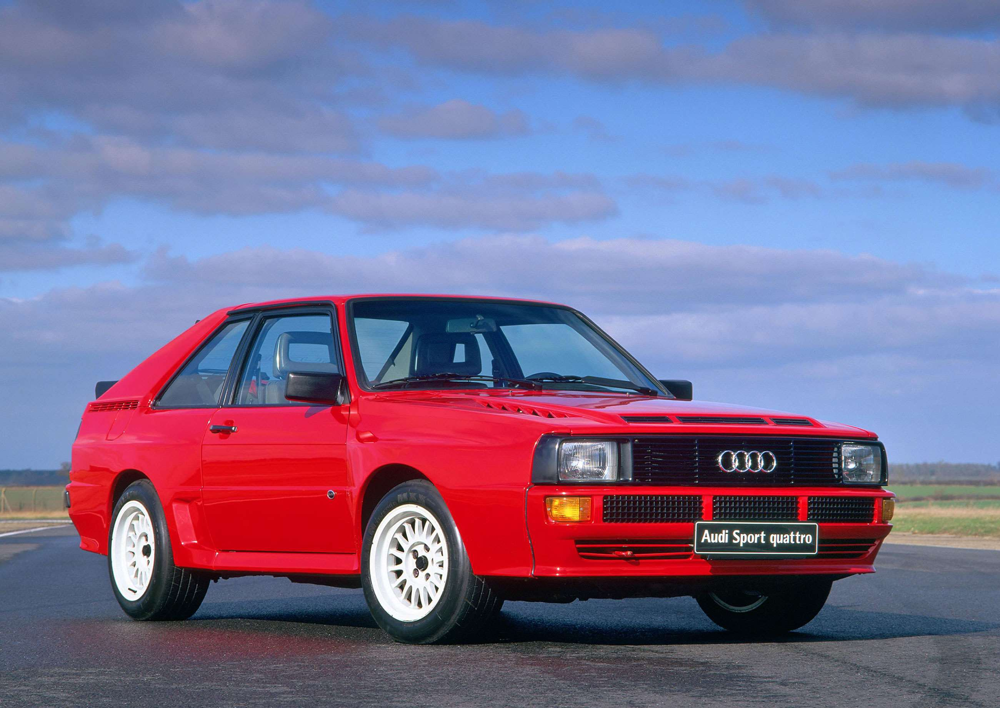
1980-1991
The car that revolutionized rallying and brought all-wheel drive to performance cars. The Quattro dominated World Rally Championship and changed perceptions of Audi forever.
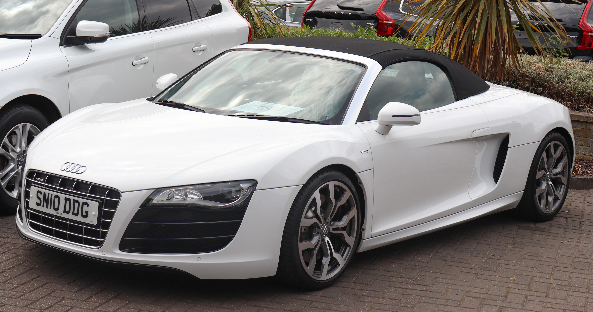
2006-present
Audi's first supercar, born from Le Mans-winning race cars. Available with V8, V10, and now V10 performance. The R8 proved Audi could compete with the best.
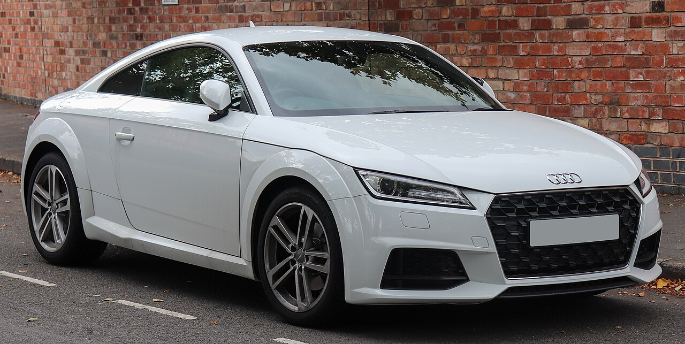
1998-present
A design icon. The TT's Bauhaus-inspired styling was revolutionary. The first generation's "round" theme influenced a generation of car design.
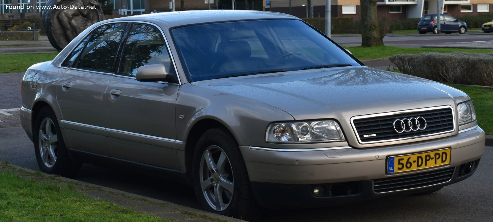
1994-present
The flagship luxury sedan. First with aluminum space frame (ASF) construction, significantly reducing weight while maintaining rigidity.
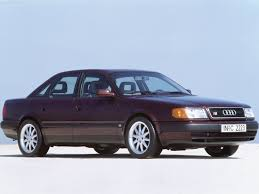
1968-1994
The car that revived Audi. The 1968 100 (C1) was a stylish, modern sedan that established Audi's reputation. The 1982 C3 set new standards for aerodynamics.
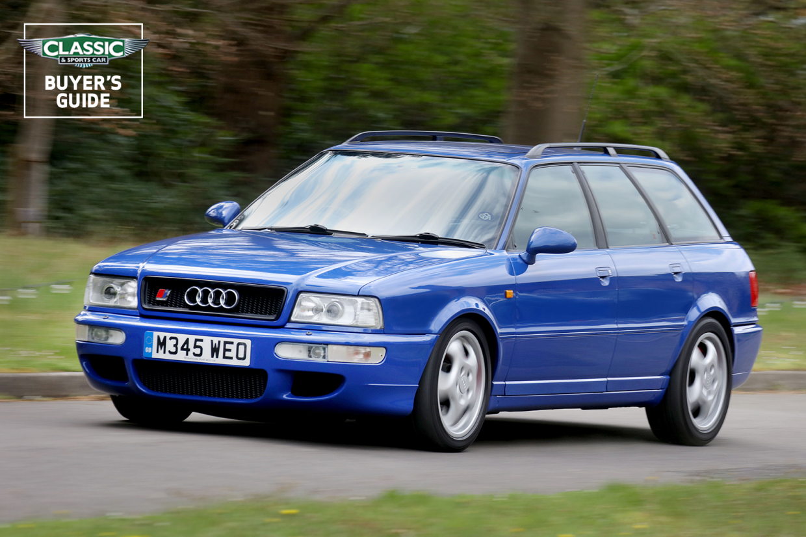
1994-1995
The first Audi RS model, developed with Porsche. A 315 hp wagon that could embarrass supercars. Launched the RS performance sub-brand.
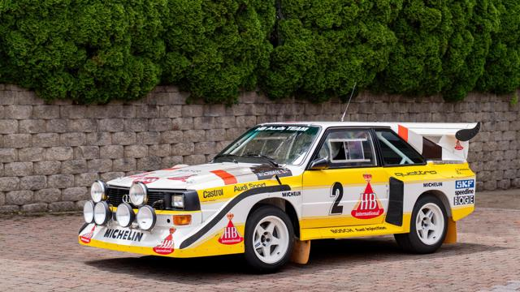
1983-1985
Homologation special for Group B rallying. Short wheelbase, carbon fiber, and 306 hp. One of the most desirable Audis ever.
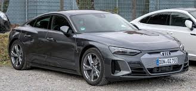
2021-present
Audi's electric performance flagship. Shares platform with Porsche Taycan. Stunning design and 637 hp in RS version.
The story of quattro began in 1977 when an Audi engineer, Jörg Bensinger, noticed that the Volkswagen Iltis military vehicle could out-handle much more powerful cars in slippery conditions. He proposed putting all-wheel drive in a performance car.
At the time, all-wheel drive was strictly for off-road vehicles. Putting it in a sports car was radical. But Audi's management approved the project, and the Quattro was born – a turbocharged coupe with permanent all-wheel drive.
The Quattro's rally debut at the 1981 Monte Carlo Rally shocked the world. In snow and ice, the Quattro was unbeatable. It dominated the World Rally Championship, winning manufacturers' titles in 1982, 1983, and 1984.
quattro technology evolved through generations:
Today, quattro is available across Audi's entire lineup, from A3 to R8. It's central to Audi's identity and performance reputation.
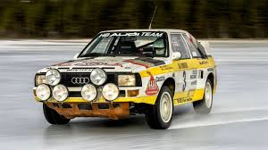
Audi Quattro dominating World Rally Championship
"quattro changed the rules of the game. Suddenly, power meant nothing without grip."
Audi's design philosophy has evolved from the aerodynamic focus of the 1980s to the sophisticated, technical aesthetic of today. The brand's motto is "At the intersection of progression and sophistication."
Audi's chief designers have included Hartmut Warkuß (responsible for the aerodynamic 100), Peter Schreyer (later at Kia), and Marc Lichte (current design director).
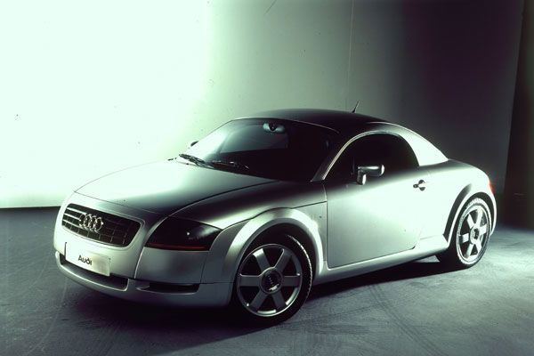
Aluminum space frame construction debuted on A8 in 1994. Reduces weight by 40% compared to steel while maintaining strength.
Audi pioneered LED daytime running lights (2004), full LED headlights (2008), Matrix LED (2013), and laser high beams.
Introduced in 2002, MMI integrated infotainment controls. Evolved to MMI Touch with handwriting recognition.
Fully digital 12.3-inch instrument cluster introduced in 2014. Customizable displays with 3D graphics.
Driver assistance systems including adaptive cruise, lane keeping, and traffic jam pilot. AI:REMOTE PARK pilot can park itself.
Audi's electric technology. e-tron (2018) was first production EV. Now expanded to e-tron GT, Q4 e-tron, Q6 e-tron.
Audi's Le Mans dominance with diesel (R10 TDI) and hybrid (R18 e-tron) demonstrated technological leadership. The R8 race car (1999) won 5 times and spawned the R8 road car.
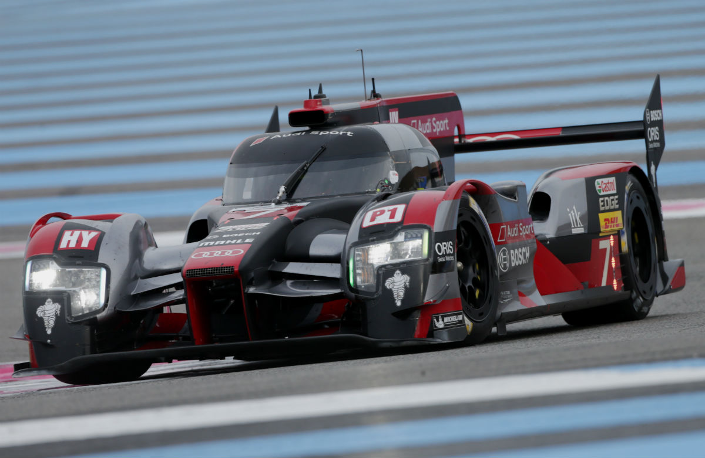